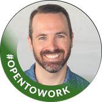

Britt Midgette
Experience Design Director
Creative leadership. Product strategy. AI-powered execution.
I lead teams from complex business challenges to digital experiences people actually use.
San Diego Open to remote and hybrid opportunities
Three pieces of recent work
I lead creative direction, experience strategy and digital product design, along with the design systems, teams and operations that deliver them. I take work from the ambiguous end of a problem through to shipped code, AI and emerging technology included.


Selected work
-

Enterprise learning platform
A stalled transformation restarted, and a design system built to carry it.
Design Director · 2025
CompTIA’s CEO had a clear vision that broke with every convention in IT certification, and a transformation that had stalled trying to reach it. We joined as a development partner; as the design problems surfaced I embedded with their team, then we took over the design work entirely and turned the sketches into a direction the whole team could build against.
- 22components in the design system
- 10–12page templates
- Livein production
-

Global digital transformation
A digital estate across 200+ countries, consolidated into one architecture.
Design Director · 2022
Years of independent growth had left ADM with fragmented content, competing navigation and sprawling child sites. I led the content audit, the future-state information architecture and the atomic design system that let every market share a foundation while keeping local relevance.
- 3,000+ → <1,000pages after consolidation
- 12page templates
- 60+child sites brought in
-

Product, founder-owned
A drop platform designed, built and shipped end to end.
Founder · Product design & build
Independent sellers were running limited drops across a form, a payment app, a spreadsheet and a group text, and it broke exactly when a drop went viral. I set the product strategy, designed the experience and wrote the front-end, working with AI through the build.
- 7vendors live on the platform
- End to endstrategy, design and front-end
- Shippedtimed drops, inventory, messaging
I had the pleasure of managing Britt at Valtech, where he was an Experience Design leader on my team. Britt was the kind of person I could count on to step into whatever the team needed, whether that meant jumping into a fast-moving pitch on a tight timeline or helping navigate a complex client engagement.
More selected work
-
 NIPR
A fragmented insurance licensing platform where a single task could mean fourteen open screens, reorganized around the user’s journey into one g
NIPR
A fragmented insurance licensing platform where a single task could mean fourteen open screens, reorganized around the user’s journey into one g
-
 MAC Cosmetics
A connected physical-digital store in Queens built on MAC Pass, Virtual Try-On and RFID-driven Tap & Try, delivering a 200%+ lift in digital engag
MAC Cosmetics
A connected physical-digital store in Queens built on MAC Pass, Virtual Try-On and RFID-driven Tap & Try, delivering a 200%+ lift in digital engag
-
 Tiny CRM
An AI-powered CRM built for the person running several businesses at once, not for a sales department. Designed and built end to end.
Tiny CRM
An AI-powered CRM built for the person running several businesses at once, not for a sales department. Designed and built end to end.
-
 Under Armour
Experience strategy and concept development for a Human Performance Center, and two pilots (Armour Bar and Map My Run) exploring what a
Under Armour
Experience strategy and concept development for a Human Performance Center, and two pilots (Armour Bar and Map My Run) exploring what a
-
 Artifact Intelligence
A Learning Intelligence Platform that reads the signals a learning environment already produces, and turns them into pathways an institution can act o
Artifact Intelligence
A Learning Intelligence Platform that reads the signals a learning environment already produces, and turns them into pathways an institution can act o
-
 Bose
Digital retail experiences designed on the rails of an existing physical display system, built from years of Bose research and carried across in-store
Bose
Digital retail experiences designed on the rails of an existing physical display system, built from years of Bose research and carried across in-store
-
 SAG-AFTRA
Research with 30 actors reshaped how SAG-AFTRA members track residuals, bringing the union’s internal payment process into the member experience
SAG-AFTRA
Research with 30 actors reshaped how SAG-AFTRA members track residuals, bringing the union’s internal payment process into the member experience
-
 LEGOLAND
A park-wide RFID game across LEGOLAND California, unlocked by a physical Key to the Kingdom and designed around one rule: no kid-facing screen time.
LEGOLAND
A park-wide RFID game across LEGOLAND California, unlocked by a physical Key to the Kingdom and designed around one rule: no kid-facing screen time.
-
 Men’s Wearhouse
Twelve digital concepts tested with sixty customers in Chicago, narrowed to two, prototyped in the San Jose flagship and rolled out to Men’s Wea
Men’s Wearhouse
Twelve digital concepts tested with sixty customers in Chicago, narrowed to two, prototyped in the San Jose flagship and rolled out to Men’s Wea
Testimonials
-
Britt is a talented experience design leader and someone I’ve always genuinely enjoyed working with. He brings intelligence, enthusiasm, and curiosity to every challenge, with a real desire to push the work forward and challenge the status quo.
Read full recommendation Show less
Britt is a talented experience design leader and someone I’ve always genuinely enjoyed working with. He brings intelligence, enthusiasm, and curiosity to every challenge, with a real desire to push the work forward and challenge the status quo, doing so without losing sight of research, best practices, or what will actually resonate with users.
One of the things I appreciate most about Britt is that he doesn’t “stay in his lane” in the best possible way. He brings a unique perspective to design and experience challenges, asks smart questions, and makes the work around him better. He’s also incredibly efficient without ever taking shortcuts.
Beyond all of that, Britt is simply a wonderful human and colleague. I’d happily work with him again and recommend him without hesitation!
 Jennifer Stoll
VP, Integrated Marketing
Jennifer Stoll
VP, Integrated Marketing
-
Britt was my go-to choice for UX work, and one of the best UX experts I’ve had the chance to work with. Beyond the craft, Britt leads with a calmness and charm that’s genuinely rare.
Read full recommendation Show less
I worked alongside Britt during my years at Valtech, where he grew into Experience Design Director, and for good reason. He was my go-to choice for UX work, and one of the best UX experts I’ve had the chance to work with.
Beyond the craft, Britt leads with a calmness and charm that’s genuinely rare. It made him a trusted presence internally and a user experience SME clients wanted in the room. He raised the standard of the work and the temperature of the team at the same time. I’d work with him again in a heartbeat.
Whatever he builds at Artifact Digital, his clients are in very good hands.
 Zoran Miuca
VP, Delivery & Professional Services
Zoran Miuca
VP, Delivery & Professional Services
-
Britt has always been especially good at making sense of ambiguous problems. Rather than jumping to a single answer, he explores different approaches, brings the right disciplines into the conversation, and helps the team work toward the best solution together.
Read full recommendation Show less
I had the pleasure of working with Britt across many projects over the years, with me on the engineering side and him in UX/UI design and strategy. During that time, I also got to watch him grow from a Senior Experience Designer into an Experience Design Director.
Britt has always been especially good at making sense of ambiguous problems. Rather than jumping to a single answer, he explores different approaches, brings the right disciplines into the conversation, and helps the team work toward the best solution together. We collaborated on countless deceptively difficult interface problems, how to fit a lot of information or functionality into a small amount of screen space while still giving everything room to breathe and making the experience feel unique and polished. He has a great instinct for what needs to be prominent, what can be tucked away, and how all the pieces should work together.
As he moved into leadership, those same strengths translated beyond the individual design. He became someone who could bring clarity and direction to a larger problem without needing to dictate the answer. He creates space for different perspectives, asks the questions that help a team get unstuck, and is comfortable testing ideas and changing course when the work points somewhere better. From an engineering perspective, I particularly appreciated that his approach to design leadership was collaborative. Technical constraints and implementation realities were part of the conversation, not something handed off to engineering afterward.
He also made all of that work genuinely enjoyable. Britt is laid back, optimistic, and brings just the right dash of playfulness to a team. He always seemed to have a funny story or anecdote ready, was perfectly willing to laugh at himself, and could keep things light even when we were wrestling with a frustrating problem.
I always valued his perspective and trusted him as both a design partner and a leader. I’d happily work with Britt again, and I’d recommend him to any team looking for someone who can combine thoughtful UX strategy, strong design instincts, collaborative leadership, and a real ability to bring people together around difficult problems.
 Christine Benedict
Lead Software Engineer, Valtech
Christine Benedict
Lead Software Engineer, Valtech
-
Britt is a creative force that can add value to any team. He brings with him personality and a unique approach to problem solving.
I have personally benefited from his work while spending time with him during his role at Crosspointe. Britt is always full of energy and drive to see projects completed and ensure all team members are involved.
It is no doubt that Britt is a one of a kind creative thinker and doer.
 Patrick Montelongo
Growth & Customer Success Leader
Patrick Montelongo
Growth & Customer Success Leader
-
He’s a thoughtful and highly capable design leader who understands how things are built and is comfortable getting hands-on with prototyping. That combination is exactly what makes him effective as a Design Technologist.
Read full recommendation Show less
I had the pleasure of working with Britt at Valtech, where he consistently stood out for his ability to bridge design and technology.
He’s a thoughtful and highly capable design leader who understands how things are built and is comfortable getting hands-on with prototyping. That combination is exactly what makes him effective as a Design Technologist, able to move fluidly between design thinking and technical execution.
I’d gladly work with Britt again and recommend him to any team looking for someone who can connect design, technology, and execution.
Erik Parr Senior Design Engineer -
I always know that when Britt’s on my project, the work is going to be top tier, well thought out, thorough, and backed by research and data.
Read full recommendation Show less
Working with Britt is a true pleasure. I’ve had the privilege of working with Britt on many projects for a variety of different clients over the years. Aside from being one of the kindest people I’ve worked with, I always know that when Britt’s on my project, the work is going to be top tier, well thought out, thorough, and backed by research and data. He has a knack of making even the toughest clients feel assured and confident in direction through his presentation of the work, and on a personal level he relates and puts everyone in the room at ease, all while being the consummate professional. I can’t recommend Britt highly enough, he’s a true asset to any team, and I’d jump at the chance to work with him again.

Chris Harris Program & Project Leader -
What stands out to me from my time with Britt is his ability to step into complex or misaligned situations and find clarity.
Read full recommendation Show less
I worked closely with Britt at Valtech on projects ranging from B2B platforms to interactive theme park experiences. From a technology perspective, he is highly effective at bridging the gap between conceptual design and technical execution.
What stands out to me from my time with Britt is his ability to step into complex or misaligned situations and find clarity. When project goals are clouded or executive stakeholders are dissatisfied, Britt excels at listening through the noise. He engages directly with leadership to identify the root issue, uses that insight to realign internal teams, and resets prioritization to match the client’s actual goals. Through this, he consistently turns challenges into successful outcomes and builds strong relational capital.
Ron Gaulden Senior Director, Technology -
One of Britt’s greatest strengths is his adaptability. He takes feedback well, stays flexible as priorities shift, and approaches challenges with a positive, solutions-oriented mindset.
Read full recommendation Show less
I had the pleasure of managing Britt at Valtech, where he was an Experience Design leader on my team. Britt was the kind of person I could count on to step into whatever the team needed, whether that meant jumping into a fast-moving pitch on a tight timeline or helping navigate a complex client engagement.
One of Britt’s greatest strengths is his adaptability. He takes feedback well, stays flexible as priorities shift, and approaches challenges with a positive, solutions-oriented mindset. He was always willing to take something on and figure out the path forward.
Just as importantly, Britt contributed to the kind of team environment people want to be part of. He was welcoming, collaborative, and well respected by his colleagues. I always appreciated his willingness to pitch in, support the people around him, and meet challenges head-on.
Sarah Swartzendruber VP, Product Design -
Britt and I worked together when we were both at Valtech, and I always appreciated his excitement and enthusiasm about exploring ways of approaching experience design solutions and new approaches with AI-assisted technology that worked to meet client business priorities and user needs.
His open-minded, calm approach paired with out-of-the-box thinking came to our team’s aid in numerous ways when we worked together! Any team would be lucky to have him!
Susan Iovenitti Health strategy, experience strategy -
What sets him apart is his ability to take design and UX objectives and look at them from new angles, poke and tease out possibilities, and distill solutions into phenomenal products and experiences.
Read full recommendation Show less
I had the pleasure of working with Britt on countless projects over several years as a peer-leader in our cross-functional group. What sets him apart is his ability to take design and UX objectives and look at them from new angles, poke and tease out possibilities, and distill solutions into phenomenal products and experiences. As an engineering leader, I appreciated how Britt and I could collaborate and riff on various solutions to come up with meaningful outcomes for our end users, often giving my engineering teams opportunities to add to the magic. He is equally comfortable working with engineers, product, and stakeholders alike in an open and collaborative mindset.
Britt is the kind of person you want to work with and be around. His work is exceptional and his cheerful and caring personality is like a ray of sunshine. I would work with him again in a heartbeat.
Cameron Perry Engineering Leader
Contact
Looking for a design leader who can connect strategy, creative direction, and delivery? Let’s talk.
brisnit@gmail.com